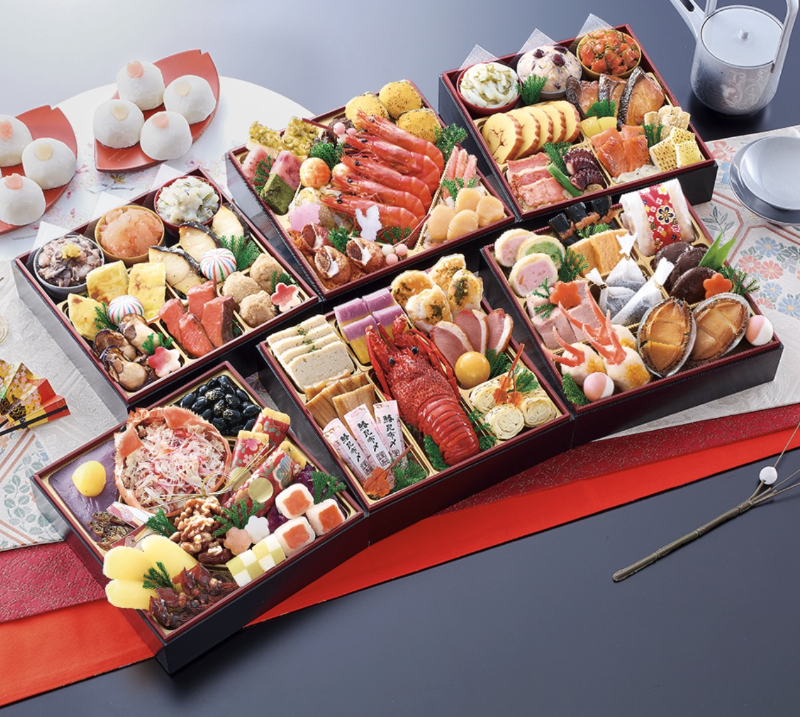

匠本舗「極」
7〜8人で囲む大人数のお正月に
冷蔵・和風六段重
詳しく見る
QUICK GUIDE
順位だけでなく、食べる人数や保存方法が合う商品を選ぶことが大切です。まずは、ご家庭に近い条件から候補を絞ってください。
COMPARISON
価格・早割期限は販売先や予約時期により変わります。表では確認済みの基本仕様を中心に比較し、最新価格は各販売先で確認できるようにしています。
| 順位・商品 | 人数 | 品数 | 保存 | 料理 | 価格 |
|---|---|---|---|---|---|
| 1位匠本舗「極」 | 7〜8人前 | 80品 | 冷蔵 | 和風 | 公式サイトで確認 |
| 2位博多久松「博多」 | 4〜5人前 | 50品 | 冷凍 | 和洋折衷 | 販売先で確認 |
| 3位千賀屋「おもてなし」 | 4〜5人前 | 58品 | 冷蔵 | 和風 | 販売先で確認 |
| 4位板前魂「花籠」 | 3人前 | 34品 | 冷凍 | 和洋風 | 販売先で確認 |
| 5位Oisix「上高砂」 | 3〜4人前 | 販売先で確認 | 冷凍 | 和洋折衷 | 公式サイトで確認 |
CHOOSE BY NEED
TOP 5
匠本舗

親戚や家族が集まる、7〜8人のお正月に向く冷蔵六段重です。
2027年版は80品目。価格・在庫・早割期限は変動するため、予約前に公式サイトで最新条件をご確認ください。
博多久松

4〜5人で、和食と洋食の両方を楽しみたいご家庭の候補です。
Amazonと楽天市場では価格・ポイント・在庫・お届け条件が異なる場合があります。商品名と販売元を確認して選んでください。
千賀屋

解凍の手間をかけず、4〜5人で和風料理を楽しみたい方の候補です。
配送地域・お届け日・キャンセル期限を販売先でご確認ください。
板前魂

3人で食べやすく、1万円前後を目安に探す方の候補です。
段階的な早割価格は期限が細かいため、予約日に適用される価格をご確認ください。
Oisix

3〜4人で、伝統的な料理と洋風料理の両方を楽しみたいご家庭の候補です。
元日に食べる場合は解凍時間を考慮し、適切なお届け日を選んでください。
CHECK POINTS
POLICY
当ブログのおせち通販おすすめ5選のランキングの根拠は、別記事で紹介しています。
記事：「2027年正月用 おせち通販のおすすめ人気ランキングの根拠」
簡単に言うと、AIのAIのChatGPT、Gemini、Claude次のような問いをして、順位に応じて加点をします。
問：おせち専門通販で売上げ、人気でランキングベスト5を教えてください。
これらの回答に基づいて、各社順位に応じて加点し、合計点の高い順にランキングしています。

FAQ
解凍の手間を省きたいなら冷蔵、早めに受け取って保管したい場合は冷凍が候補です。冷蔵庫・冷凍庫の空きと受取日も合わせて選んでください。
おせちだけを食べるか、雑煮や寿司なども用意するかで必要量が変わります。人数表示は目安として、料理内容と重箱サイズも確認してください。
価格、在庫、ポイント、配送条件が異なる場合があります。各リンク先の商品名と販売元を確認し、条件を比較して選んでください。
価格や早割期限は変更されるため、購入手続き画面に表示される価格が優先されます。
締切前でも在庫状況により受付が終了する場合があります。希望商品が決まったら、在庫・配送日・キャンセル条件を確認して判断してください。
FINAL CHECK
最後に、人数・保存方法・料理タイプをもう一度確認してください。価格、在庫、早割期限、配送条件は各販売先の商品ページで確認できます。